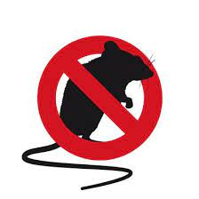

Servicios profesionales

Control de Plagas
Desinfectación

Desratización
Empresa: Aspen Fumigaciones de Daniel Orlando Ortega.
CUIT: 20-22388558-7
Nro. Registro de Empresa: RL-2018-10806604-DGEVA.
D.T.: Baron, Alejandro Mauricio.
CUIT: 20-17032182-1
Nro. Registro D.T.: CPIA 14844.
Productos y metedologia utilizada:
Desinfectación 520085-MAXFORCE
Forte-Bayer S.A.-Fipronil 0,05%-VTO 28/04/2019-Aplicación tal cual 250010-Proteginal-CE-Chemotecnica S.A.-Cipermetrina 20%-VTO 23/03/2020-40 a 75 CM3/100M2-Aplicación por aspersión.
Desinfección completa.
Método de aplicación: ROCIADO POR ASPERCIÓN EN SUPERFICIES.
Productos utilizados: SANITIZANTE CUATERNARIO (Mezcla de amplios cuaternarios al 80%)
DOMICILIO: IMPRESA EN LA OBLEA
FECHA DE TRATAMIENTO: IMPRESA EN OBLEA.
CORESPONDIENTES A PROTOCOLOS DISPUESTOS POR G.C.B.A.
Nuestra historia
¿Está buscando un Servicio de exterminación de calidad y confiable?
No busque más. Somos Aspen Fumigaciones, y estamos disponibles
donde quiera y cuando quiera. Desde 2017, nos hemos comprometido
a prestar el mejor servicio del sector a nuestros clientes en Capital
Federal y Prov. de Buenos Aires. No sólo cumplimos con sus
expectativas, también las superamos.
Control de Plagas
Desinfectación
Desratización
Av. Eva Peron 3413
aspenfumigaciones@hotmail.com
11 5742-9714/ 11 6541-4020